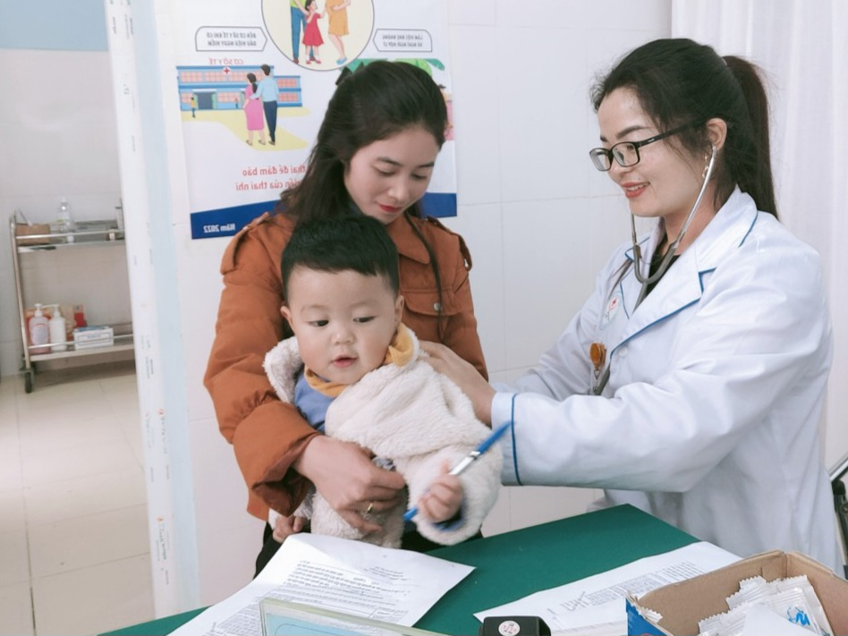
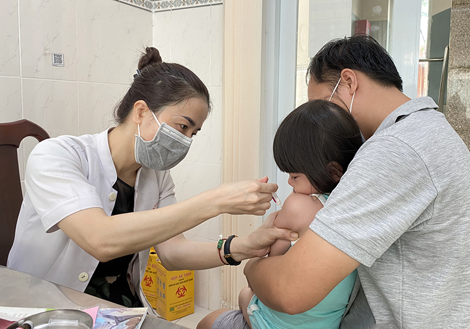

Thứ tư - 01/04/2026 4:33 PM
Để các bậc cha mẹ, phụ huynh hiểu và nắm được tầm quan trọng và ý nghĩa cũng như lợi ích của tiêm chủng mở rộng, Trạm Y Tế Tây Khánh Vĩnh xin cung cấp các thông tin về chương trình tiêm chủng mở rộng và các loại vắc xin phòng bệnh miễn phí cho trẻ em trong độ tuổi tiêm chủng
Tiêm chủng là việc đưa chất kháng nguyên vào cơ thể (một dạng vắc xin) nhằm kích thích hệ thống miễn dịch phát triển sự miễn dịch thích ứng đối với một căn bệnh. Vắc xin có thể ngăn ngừa hoặc cải thiện các hiệu ứng lây nhiễm của nhiều tác nhân gây bệnh
Tiêm chủng mở rộng là dự án thuộc chương trình mục tiêu y tế quốc gia. Tiêm vắc xin phòng bệnh có vai trò, lợi ích quan trọng trong việc ngăn ngừa các bệnh truyền nhiễm nguy hiểm đối với trẻ. Vắc xin dùng trong dự án tiêm chủng mở rộng là hoàn toàn miễn phí, an toàn và hiệu quả để phòng bệnh cho trẻ em
Nếu không tuân thủ tiêm chủng đầy đủ và đúng lịch các loại vắc xin trong chương trình Tiêm chủng mở rộng quốc gia thì nguy cơ sẽ mắc bệnh sau: lao, bạch hầu, uốn ván, ho gà, bại liệt, sởi, rubella, viêm gan B, viêm phổi và viêm màng não mủ, viêm não Nhật Bản B… Các bệnh trên hiện nay chưa có thuốc điều trị đặc hiệu, nếu trẻ bị mắc bệnh sẽ nguy cơ bệnh tiến triển rất nặng, có thể dẫn đến tử vong, biến chứng hoặc di chứng gây ảnh hưởng đến cuộc sống sau này của trẻ, ngoài ra còn có thể lây lan thành bệnh dịch nguy hiểm cho cộng đồng. Vậy việc tiêm chủng đầy đủ và đúng lịch không chỉ có tác dụng phòng bệnh đối với trẻ mà còn mang lại những lợi ích to lớn đối với xã hội và là một chương trình mang tính nhân văn sâu sắc mà Đảng và Nhà nước dành cho trẻ
Để trẻ được tiêm chủng đầy đủ, đúng lịch các bậc phụ huynh cần ghi nhớ Lịch tiêm chủng cho trẻ như sau:
Trẻ sơ sinh: Tiêm vắc xin phòng bệnh lao (BCG); Phòng bệnh Viêm gan B trong vòng 24 giờ đầu sau sinh.
Source : ChiLeNguyen - Trạm y tế Tây - Khánh Vĩnh - Khánh Hoà

